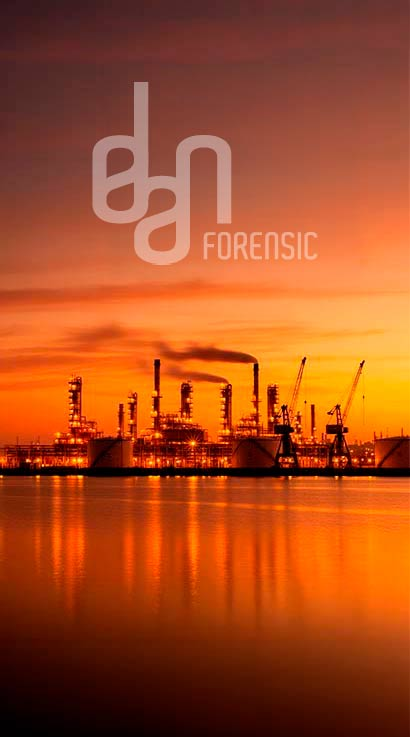

El mayor incidente del sistema eléctrico europeo en más de veinte años. En apenas 20 segundos, el sistema perdió unos 2.000 MW de generación renovable. Todo quedó a oscuras.
Un lunes de primavera. Sin eventos meteorológicos. Pero el sistema presentaba condiciones críticas que no pudieron remediarse a tiempo.
⚠️ Episodios de sobretensión ya se habían producido el 16, 22 y 24 de abril. Las mismas plantas de Cáceres y Cuenca se habían desconectado el día 22.
+70% de generación no síncrona (basada en convertidores)
Clasificación ICS — Reglamento (UE) 2017/1485
~355 MW desconectados en plantas solares de Granada, Badajoz, Cáceres, Cuenca, Sevilla y Huelva.
~730 MW adicionales en menos de dos segundos. Frecuencia cae 55 mHz.
La interconexión con Francia invierte flujo a 5.587 MW exportados. Las protecciones disparan.
Pérdida de sincronismo. Desconexión de Portugal, Francia, Marruecos y Baleares.
En ~20 segundos, el sistema acumuló pérdidas de entre 1.600 y 2.200 MW.
Frecuencia mínima: 47,79 Hz (nominal: 50 Hz)
Sobretensión máxima: 456 kV en red de 400 kV (+14%)
Pérdida en cascada de generación renovable por activación de protecciones de sobretensión. Tres escalones en 20 segundos.
Capacidad de reactiva próxima a saturación. Parque síncrono reducido (11 grupos). Las renovables no podían hacer soporte dinámico.
Episodios de oscilación de baja frecuencia (0,63 Hz y 0,2 Hz) entre las 12:03 y las 12:22. Escasa reserva de amortiguamiento.
Mercado sin ciclos combinados. Errores de pronóstico renovable de hasta el 36%. Cobertura insuficiente para evento N-3.
Este análisis no imputation culpa personal. Muestra la relación entre las causas y las funciones que el marco regulatorio atribuía a cada actor.
| Causa | Función implicada | Actor |
|---|---|---|
| Desconexiones por sobretensión | Gestión de restricciones técnicas y control de tensión | Operador del sistema (REE) |
| Diseño del control de tensión (P.O. 7.4) | Regulación del servicio de control de tensión | CNMC |
| Programación sin ciclos combinados | Despacho económico y seguridad del sistema | REE |
| Vulnerabilidad latente no corregida | Vigilancia y propuesta de mejoras reguladoras | CNMC + REE |
| Limitaciones de la generación no síncrona | Marco técnico de conexión a red | Diseño regulatorio |
Los informes de REE, ENTSO-E y el Comité de Análisis coinciden: cada automatismo actuó conforme a sus ajustes. Ningún sistema de protección falló.
El volumen y la velocidad del desequilibrio excedieron las hipótesis de diseño. Con 11 grupos síncronos y una inercia mínima, el sistema no tenía margen para absorber un evento N-3.
49,50 Hz — Primer escalón de deslastre
49,00 Hz — 6 escalones de deslastre por subfrecuencia
Reversión flujo Francia: 3.807 MW import → 5.587 MW export
Desconexión de sincronismo con Europa y Francia
✓ Reposición: soporte desde Marruecos a las 13:04. Restablecimiento completo: ~15 horas sin incidentes secundarios.
Investigación de la Audiencia Nacional, Centro Criptológico Nacional y REE. El análisis técnico no identificó indicios de origen cibernético.
Día meteorológicamente ordinario. La tendencia de sobretensiones venía de días antes, incompatible con un fenómeno atmosférico puntual.
Todas las desconexiones de generación resultan explicables por la activación pasiva de protecciones propias de las instalaciones ante condiciones de tensión fuera de rango.
Alta penetración renovable + bajo parque síncrono = menor reserva dinámica. La configuración del 28-A era extrema pero no imposible.
Propuestas de revisión del P.O. 7.4 existían desde 2022. El calendario situaba la aprobación posterior al incidente.
Los planes de defensa y reposición actuaron conforme a diseño. El problema fue la magnitud del evento.
• Comité de Análisis — Gobierno de España
• ENTSO-E — Factual & Final Report
• REE — Informe técnico (junio 2025)
• CNMC — Informe del incidente
• NREL (Estados Unidos)
• FAU — Friedrich-Alexander-Universität
• Compass Lexecon — INESC TEC (AELEC)
• Reglamento (UE) 2017/1485
• P.O. 1.5, 3.1, 7.4, 9, 12.2, 12.3
• ICS — Escala de Incidentes
Este documento no constituye una investigación propia ni un juicio de responsabilidad. Es un análisis estructurado de causa-función elaborado a partir de los informes oficiales disponibles.